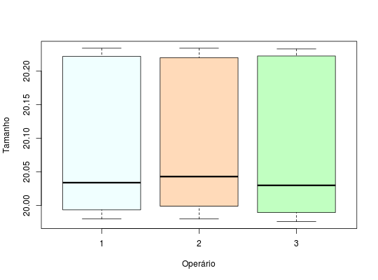

Dados referentes às medidas de peças de uma linha de produção. O objetivo é analisar a repetitividade e a reprodutividade de um micrômetro com leitura milesimal, usado na medição de um componente de um processo de usinagem. Três operadores treinados mediram duas vezes cada uma de 10 peças. A sequência em que cada um dos operadores mede cada uma das peças foi aleatorizada.
Um data.frame com 60 observações e 3 variáveis, em que
pcoptamCOSTA et al. (2010), pág. 152.
data(EpprechtTb5.2)#> Warning: data set ‘EpprechtTb5.2’ not foundstr(EpprechtTb5.2)#> 'data.frame': 60 obs. of 3 variables: #> $ pc : int 1 1 1 1 1 1 2 2 2 2 ... #> $ op : int 1 1 2 2 3 3 1 1 2 2 ... #> $ tam: num 20 20 20 20 20 ...xtabs(~pc + op, data = EpprechtTb5.2)#> op #> pc 1 2 3 #> 1 2 2 2 #> 2 2 2 2 #> 3 2 2 2 #> 4 2 2 2 #> 5 2 2 2 #> 6 2 2 2 #> 7 2 2 2 #> 8 2 2 2 #> 9 2 2 2 #> 10 2 2 2boxplot(tam ~ op, data = EpprechtTb5.2, xlab = "Operário", ylab = "Tamanho", col = c("#F0FFFF","#FFDAB9", "#C1FFC1"))